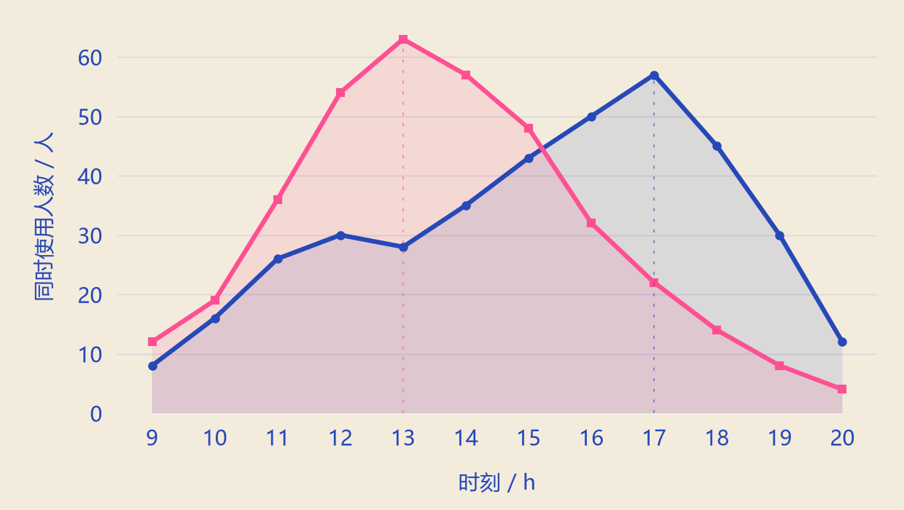

A COMMON ROOM / TWO DAILY RHYTHMS
一间空间，
两种节奏。
4h
两条示例曲线的峰值时刻差
把工作日与周末的使用时段放在同一坐标中，先看节奏，再讨论空间安排。
09:00—20:00 / 两个示例日的同时使用人数
工作日示例周末示例

工作日示例57人峰值时刻 17 h
周末示例63人峰值时刻 13 h
A COMMON ROOM / TWO DAILY RHYTHMS
两条示例曲线的峰值时刻差
把工作日与周末的使用时段放在同一坐标中，先看节奏，再讨论空间安排。
